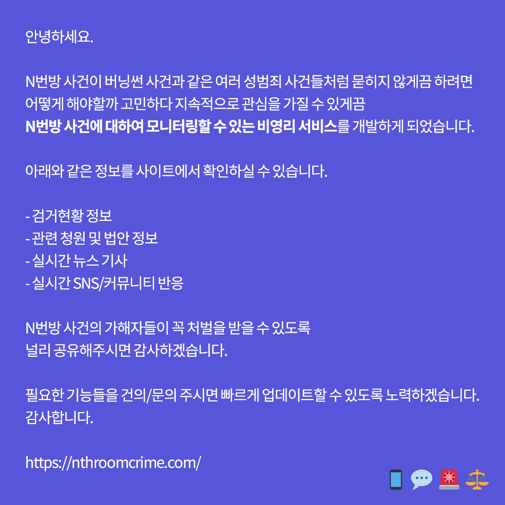

N번방 시민방범대 사이트
트위터
(분류가 마땅치 않아 우선 여성단체 카테고리에 넣습니다. 추후 얼마든지 수정해주세요.)
N번방 시민방범대는 속칭 'N번방 사건'이라고 불리는 범죄 사건의 수사 현황과 여론을 한눈에 파악할 수 있도록 기획/개발한 모니터링 사이트이다. 3월29일에 오픈했다. 고등학교 선후배였던 대학생 3명(이중 숙대생이 있다.)과 군인 1명이 개발했다고 한다.관련 기사 해당 사이트에서는 N번방 관련 청원 및 법안 정보, 가해자 검거 현황, 파생방 목록, SNS/커뮤니티 반응이 1분마다 업데이트되고 있다.